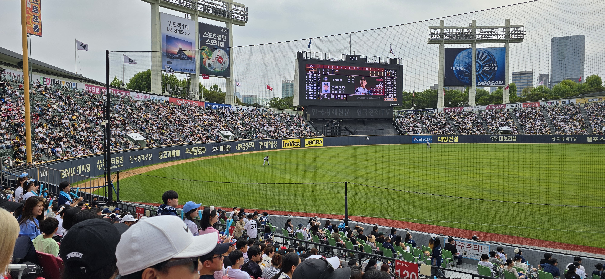
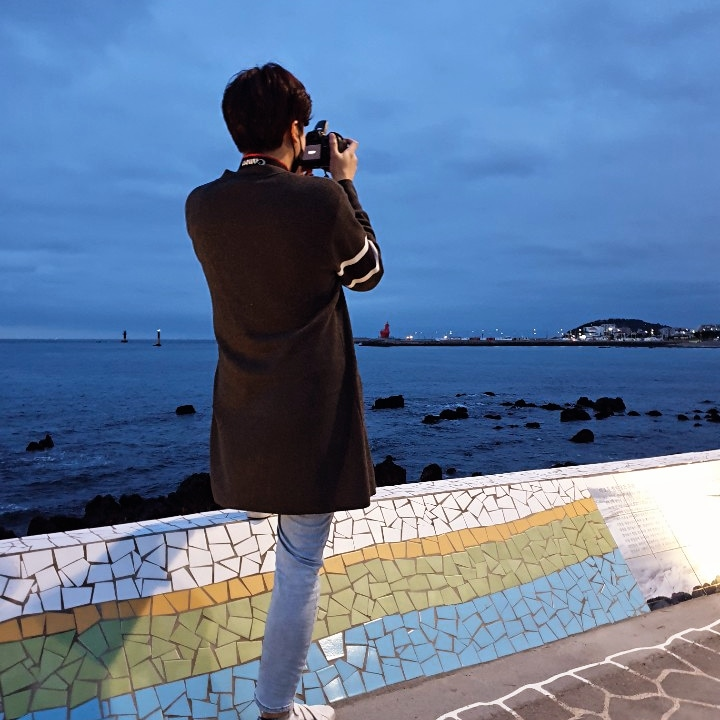
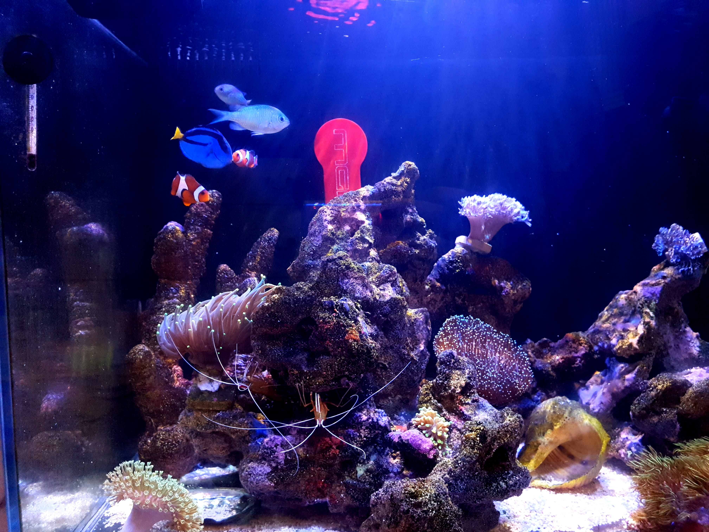

내가 즐기는 취미
일단 전 취미가 상당히 다양합니다.
대표적으로만 말씀드리면, 야구를 상당히 좋아하여 직접 경기관람하는 것도 좋아합니다.
응원하는 팀은 LG TWINS입니다.
또한, 지금은 잠시 휴식중이나 한때 해수어항을 운영하며 구경하는것도 좋아했어요.
전체를 아울러, 사진 촬영하는 것도 즐겨요!
제가 찍은 사진을 구경해주세요~!
대표적으로만 말씀드리면, 야구를 상당히 좋아하여 직접 경기관람하는 것도 좋아합니다.
응원하는 팀은 LG TWINS입니다.
또한, 지금은 잠시 휴식중이나 한때 해수어항을 운영하며 구경하는것도 좋아했어요.
전체를 아울러, 사진 촬영하는 것도 즐겨요!
제가 찍은 사진을 구경해주세요~!
 
